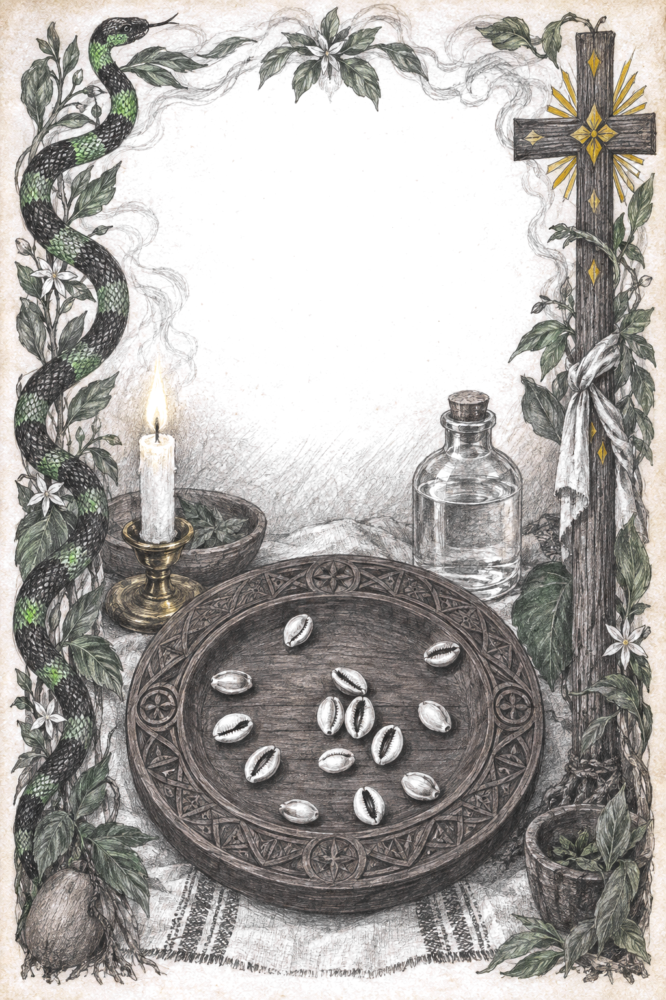
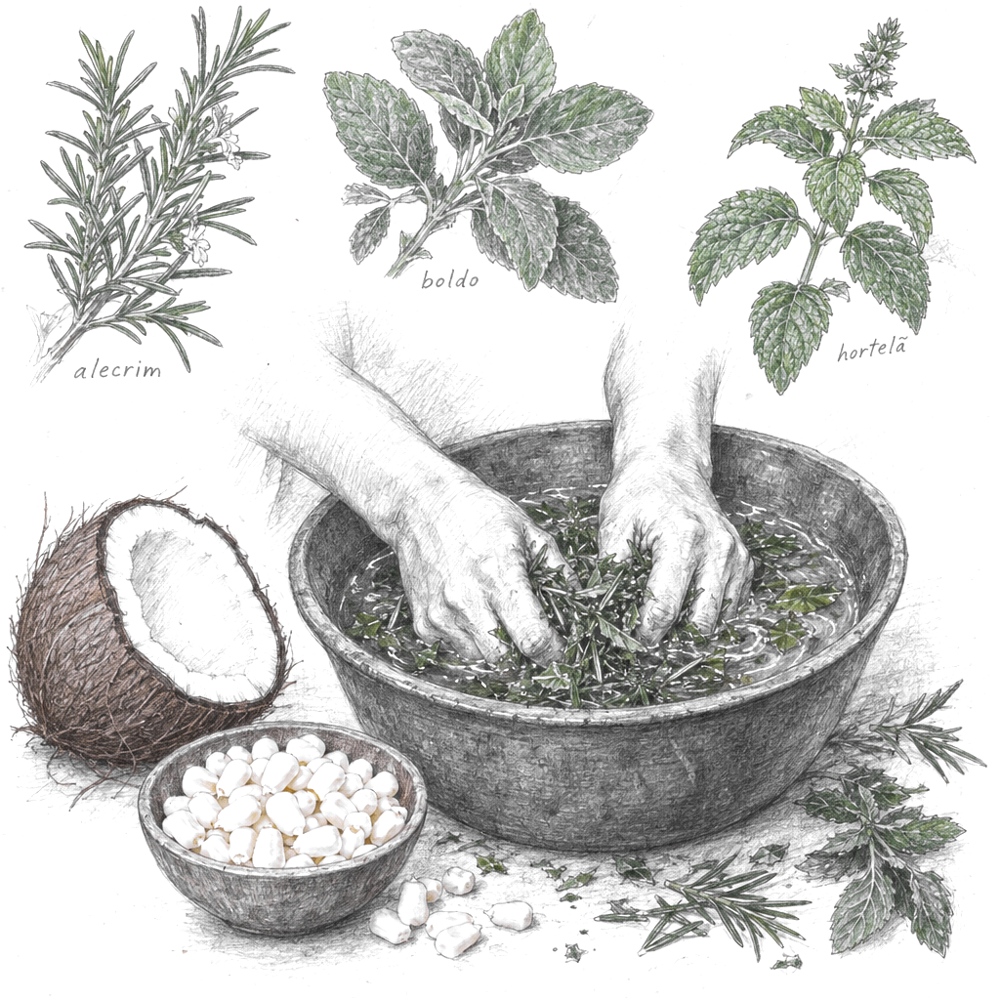
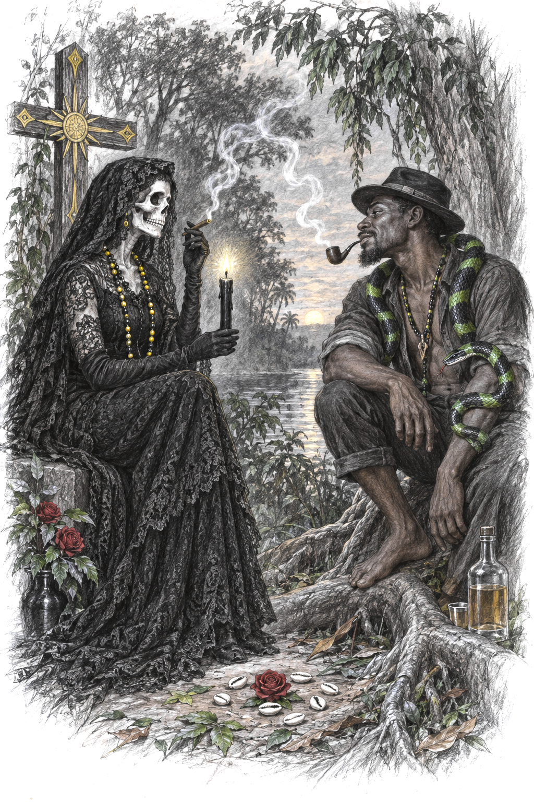
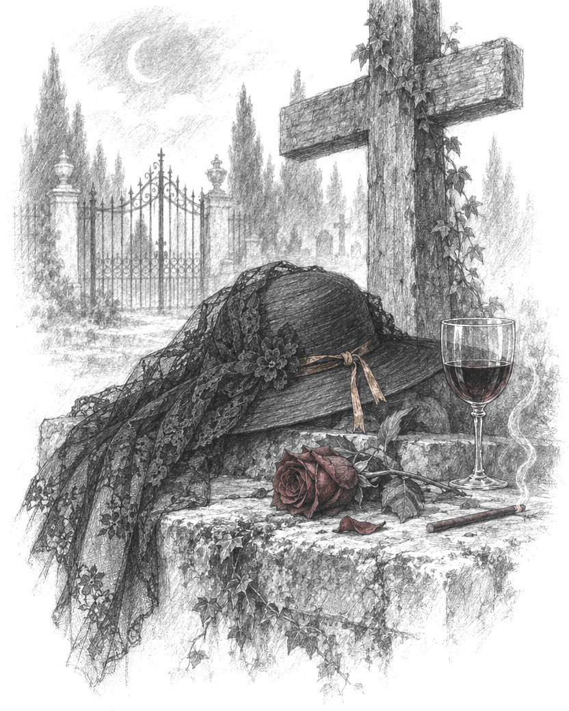
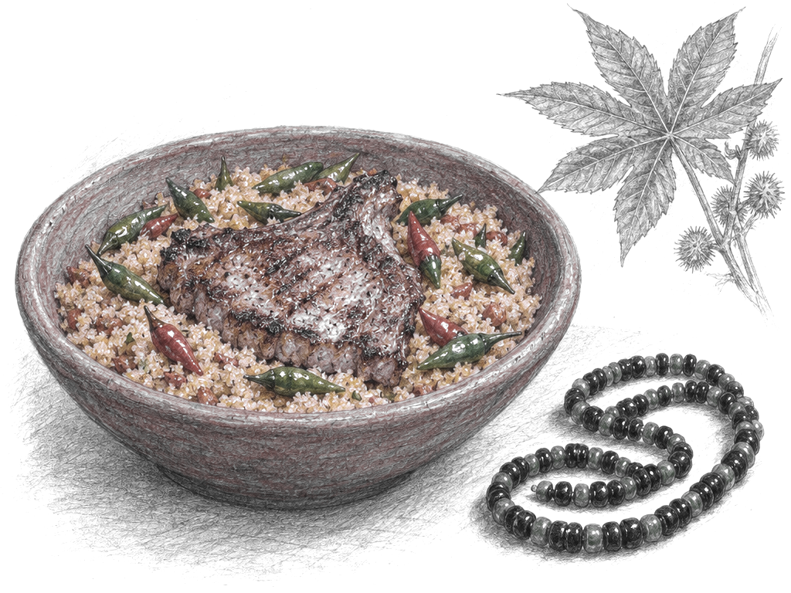
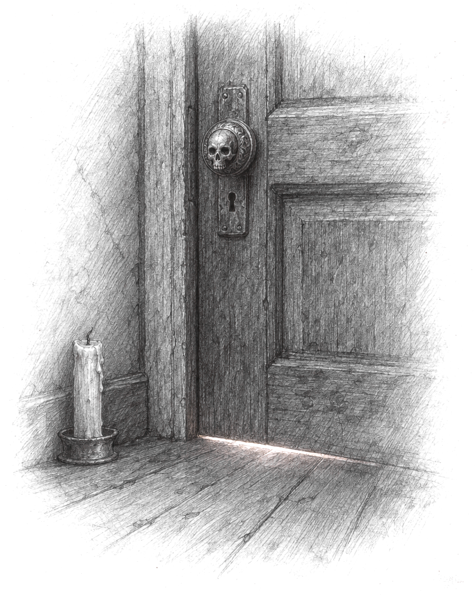
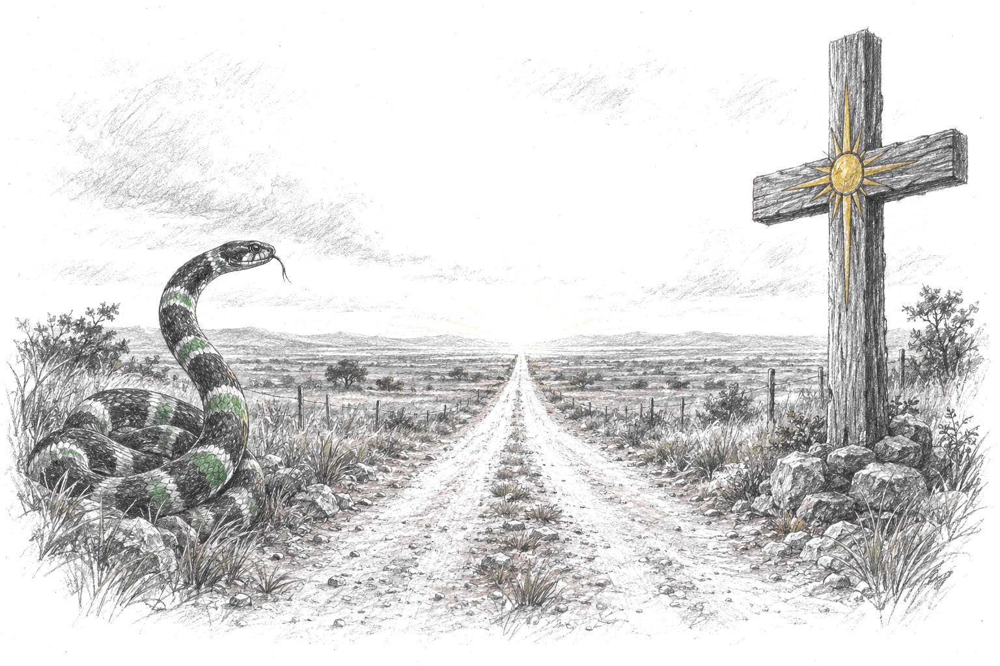

· meu grimório ·
Consulta ao
Oráculo
de Exu Ngombo
19 de outubro de 2026
Sacerdotisa: Thali (Thalita Queres)
Ngombo. Entre os povos bantos de Angola (chokwe, lunda), ngombo é o nome da adivinhação pelo cesto: o adivinho sacode um cesto raso com pequenos objetos de significado fixo (miniaturas de madeira, sementes, chifres, búzios) e lê a posição em que caem. Ngombo é também o espírito ancestral que guia a leitura. Dizem que os cestos só são tecidos por mulheres mais velhas. O prato de madeira com os búzios da Thali é bisneto disso.
Este grimório pertence a
Consulta ao Oráculo de Exu Ngombo · 19 de outubro de 2026
Sacerdotisa: Thali (Thalita Queres)
página 2
· o reino que me responde ·Reino da Lira
O Reino da Lira não é o reino do meu Exu nem da minha Pombagira. É o reino que responde ao momento atual da minha vida.
Caiu: negativo, com porém.
Sinal: sonhei de sábado para domingo com algo ligado ao povo da Lira, antes da consulta. Acordei com isso na cabeça.
· o que fui descobrir ·
O Reino da Lira é o reino da música, da arte, da poesia, da festa e da boemia. O nome vem da lira, o instrumento de Hermes e de Orfeu (o que desceu ao mundo dos mortos cantando) ou, em outra versão, de uma cidade africana chamada Lira. No Rio antigo, "povo da lira" era como chamavam os seresteiros da Pequena África: músicos de rua, capoeiras, malandros. Zé Pelintra mora aqui, no Povo dos Malandros.
Tem o lado da arte e do êxtase e tem o lado sombrio: vício, excesso, compensação. Bate com o jogo: a criatividade que me liberta e o "comprar para compensar".
página 4
· o que pede cuidado ·Os poréns
- Instabilidade emocional: momentos de querer o mundo e todo mundo por perto, e depois querer ficar sozinha, largar projetos e pessoas. Cuidado para não virar alguém sempre mudando de ciclo, de lugar e de pessoas.
- Repetição de padrões familiares: comportamentos ligados a dinheiro e a vícios. Vício não é só droga ou álcool, pode ser comprar para compensar um dia estressante. As mulheres da família podem repetir padrões fortes com homens e relacionamentos.
- Aprisionamento em rotina desgastante: quando não sei lidar com a rotina, fico infeliz, irritada, brava com tudo.
- Sono: atenção à privação de sono.
- Conflito: tento evitar ao máximo desavenças e conflitos.
pegadas que dão voltas sem sair do lugar… e no centro, uma porta entreaberta.
página 5
· a encruzilhada ·Caminhos da vida
Trabalho
Estudar mais, ter conhecimento e autoridade para falar. Usar a comunicação de forma estratégica e assertiva. Não absorver energia nociva: se alguém incomoda, fingir que não existe. Agora não é hora de buscar conflito nem de provar quem eu sou. É hora de me resguardar e cuidar da minha cabeça.
Saúde
Aparecem padrões de geração ligados ao sono e à parte hormonal e reprodutiva. Cuidar do corpo: atividade física, ambientes e alimentação. Um corpo mal alimentado padece e não aguenta o trampo da vida.
Financeiro
Padrões de geração: pensamento de escassez e a sensação de que prosperar (comprar um apartamento, casar, construir família) seria ofender quem da família não conseguiu. Fase de grandes oscilações. Cuidado com golpe, vício, manipulação de outras pessoas e ganhos de fonte que não é segura.
Relacionamentos
Cuidado com relações sustentadas só pela rotina. Às vezes a pessoa já não tem atitudes de quem deveria estar na minha vida, e mantê-la desequilibra a minha energia. Rever amizades, família e trabalho.
página 6
· o que Exu mostrou ·Espiritualidade
- Não idealizar nem depender da espiritualidade para resolver tudo. Exu mostra o caminho, mas não decide e não caminha por mim.
- Cuidado com a dependência da entidade dos outros. Minha entidade trabalha a minha paciência. Fortalecer a minha própria fé, caminhar de forma independente.
- Minhas entidades são territorialistas: não gostam de gracinha nem de bagunça.
- Pedido de apaziguamento da cabeça: só vai apaziguar quando eu cultuar a minha ancestralidade. O caos na minha vida era para eu começar a cultuar e conhecer os meus espíritos. Estou no caminho certo.
- Mutuê na quimbanda: caiu sim, equilibrado com cinco porém. O porém é banho de ervas frias.
A casa que frequento
É uma casa de passagem, não é para ficar muito tempo. Maria Caveira discorda de comportamentos do sacerdote e lá não vão permitir que eu a cultue como ela quer ser cultuada. Ela já me intuiu e mostrou. É para eu ir me desvinculando. Ela vai me mostrar outra casa: é só ter paciência.
página 7
· ervas frias ·Banho para o mutuê
Ervas frias
- Alecrim
- Água de coco seco
- Boldo
- Hortelã
- Água de canjica branca

Como fazer: macerar o banho intencionando ao meu Exu e à minha Pombagira, pedindo clareza, discernimento, apaziguamento do mutuê, ajuda com a ansiedade e que me direcionem melhor. Depois do banho de higiene, tomar da cabeça aos pés.
Frequência: durante um mês, escolher um dia da semana e fazer o banho.
Mutuê vem do banto (kimbundu mutue): cabeça. Mutuê equilibrado é cabeça no lugar. O banho de ervas frias é para esfriar, assentar, aquietar: alecrim, boldo e hortelã são folhas de acalmar, e a água de coco e a canjica branca são comida de paz.
verde das ervas, branco da canjica.
· continuação ·Água de coco, canjica e o preparo
- Água de coco e canjica branca são comidas de Oxalá: o que é branco, fresco e de paz. Canjica, acaçá e água de coco estão entre as oferendas clássicas dele. No banho entram para esfriar e adoçar a cabeça, como o agrado dos ancestrais é todo branco.
- Macerar, não ferver. Folha fresca se amassa com as mãos em água fria ou morna, mentalizando o pedido; ferver tira a força dela. Folha seca, quando for o caso, se abafa em água quente por uns dez minutos. A Thali pediu macerar intencionando ao Exu e à Pombagira: a intenção é parte da receita.
- Ordem. Primeiro o banho de higiene, depois o de ervas, da cabeça aos pés, sem enxaguar. Deixar secar no corpo. As folhas que sobrarem, o costume é devolver à terra, numa planta ou canteiro, nunca no lixo.
- Quando. Um dia fixo da semana, durante um mês: quatro banhos. Algumas casas preferem lua crescente ou cheia; se a minha não disser nada, o dia escolhido basta.
- Cuidado. Alecrim, boldo e hortelã também são remédio de farmácia caseira; grávida, criança ou quem trata alguma doença pergunta antes. A folha cura e pede respeito.
fontes: listas de ervas de Umbanda (classificação fria/morna/quente e regência) e matérias sobre o banho de Oxalá.
página 8
· bacuros ·Os meus ancestrais
Bacuros: meus antepassados, os mortos da minha família. Quando olhados, estão no negativo. Para positivar, eles querem ser lembrados.
A lista
- Anotar o nome de todos os mortos da família, por parte de mãe e de pai, até onde a família lembrar.
- Avô, avó, tios, irmãos, primos, crianças que faleceram cedo.
- Bebês que não chegaram a nascer também entram, mesmo sem nome.
- Até o parente de quem eu não gosto ou que me fez mal entra na lista. Pode ser justamente ele que está atrapalhando.
O agrado
- Separar um pratinho da comida que eu fizer no dia (ex.: arroz, feijão, batata frita e bife). Bacuro come o que eu como.
- Vela branca, copo com água e flores brancas.
- Tudo branco, montado sobre um lugar branquinho e bonito.
- Dizer que me lembro deles, que reconheço que existiram, que sou grata por cada um que passou na minha vida.
- Pedir: "Apazigua meus velhos. Peço que vocês apaziguem para que eu possa caminhar melhor, com pés mais firmes e mais livre."
- Sentar ali e conversar com eles.
página 9
· para preencher à mão ·Minha lista de ancestrais
Bacuro vem de bakulu, palavra banto para "os antigos", os antepassados. No Congo e em Angola, os bakulu são os mortos da família que continuam cuidando dos vivos quando são lembrados e alimentados.
Por parte de mãe:
Por parte de pai:
Os que não chegaram a nascer:

· os que me guardam ·
Dona Maria Caveira
e Seu Exu Cobra Coral
o Cruzeiro e a Mata, lado a lado no meu caminho.
página 10
· pombagira tutelar ·Maria Caveira
do Reino do Cruzeiro, do povo do Cruzeiro de Mata
Eu desconfiava que fosse uma Caveira, mas não imaginava qual.
Ela é a mais presente e é quem bate o martelo. É bem ranzinza, um pouquinho.
· o que fui descobrir ·Sobre Dona Maria Caveira
Fui atrás do que se conta sobre ela fora da casa. Anoto o que se repete, sabendo que cada terreiro tem seu fundamento e que, na minha relação com ela, quem manda é ela.

- Da falange dos Caveiras. Povo da Calunga, o cemitério: o povo da passagem, do fim dos ciclos e da transmutação. Trabalha ao lado de Exu Caveira e de João Caveira. Na Umbanda costuma vir na linha de Obaluaê/Omulu, o orixá da doença e da cura.
- Reservada, séria, elegante. Dizem que esconde o rosto com chapéu, véu ou capa. Não é de gira barulhenta; muita gente conta que ela raramente "trabalha em terra" e prefere agir no silêncio. Bate com o que a Thali falou: ranzinza, territorialista, não gosta de gracinha.
- "Só avisa uma vez." A frase aparece em quase todo relato sobre ela. Casa com o recado da consulta: ela já intuiu, já mostrou. Agora é eu me mexer.
- Do que ela cuida: autoestima, libertação, proteção da mulher, desfazer amarração, encerrar ciclo ruim, limpeza pesada, transmutar sofrimento. Por isso o recado final: ela vai me ajudar a largar a dependência da validação dos outros.
· continuação ·Maria Caveira e o Cruzeiro
- O Reino do Cruzeiro. Na Quimbanda, o cruzeiro (a cruz alta das praças, das estradas e dos cemitérios) é o reino da comunicação com as almas, da justiça espiritual e da prestação de contas. Regido por Exu Rei dos Sete Cruzeiros e pela Pombagira Rainha dos Sete Cruzeiros. Na lista mais difundida, o Povo do Cruzeiro da Mata é chefiado por Exu Mangueira. Faz sentido ela ser do Cruzeiro de Mata e o Cobra Coral ser das Matas: os dois se encontram onde a mata e a cruz se tocam.
- Cores e gostos. De casa para casa aparecem preto, vermelho e branco; na minha casa é preto e amarelo, o amarelo do Cruzeiro. Gosta de bebida seca e de cigarrilha, exatamente o vinho seco e a cigarrilha dela.
- As filhas dela, dizem, são independentes, se cuidam sozinhas e não se apegam a amor passageiro. Mas têm que se cuidar, porque a mãe não repete aviso.
- Dia dela no calendário. Porto Alegre tem, por lei (Lei 13.088, de 2022), o Dia da Pombagira Maria Caveira: 13 de novembro. Marcar na agenda.
- O nome não é biografia. As histórias de "quem ela foi em vida" variam demais e são devocionais. Na Umbanda se ensina que o nome aponta a marca e o jeito de atuar, não uma pessoa.
- Saudação: Laroyê, Maria Caveira! Mojubá!
fontes: páginas de Umbanda e Quimbanda e a Lei 13.088/2022 de Porto Alegre.
· pontos cantados · domínio popular ·Pontos de Dona Maria Caveira
ponto de louvorMaria Caveira, eu vim cantar em seu louvor
Meus caminhos estão fechados
Abra eles, por favor
Na barra da sua saia
Corre água e nasce flor
ponto de chegadaSe a catacumba tem mistérios
Ela é Maria Caveira
Rainha do cemitério
Ela é loira, tem olho azul
Maria Caveira, mensageira de Omolu
Exu Mangueira, chefe do Povo do Cruzeiro da MataNa cruz das almas o passarinho chorou
Chorou pelo ninho que o vento levou
Chorou pela saudade que o tempo deixou
Seu Exu Mangueira assoviou
Pra virar o tempo, e o tempo virou
Pra virar o vento, e o vento virou
O passarinho lá no galho cantou
Para avisar Exu Mangueira que o sol brilhou
o ponto que a Thali canta para ela
sem autoria indicada · cancioneiro do Terreiro do Pai Maneco
página 12
· exu tutelar ·Exu Cobra Coral
do Reino das Matas, do povo do Rio das Matas
uma cobra coral enrolada numa raiz, à beira do rio, dentro da mata.
página 13
· Exu Cobra Coral ·Oferenda e guia
Padê de dendê com farofa de mandioca
(não vai ao fogo)
- Pegar a farinha de mandioca e ir misturando com o dendê, fazendo os pedidos.
- Por cima: bisteca selada no dendê e bastante pimenta dedo-de-moça e malagueta.

Guia
- Miçangas pretas e verdes.
- Para cruzar: consagrar com folha de mamona e um pouco da cachaça dele maceradas. Deixar quando for fazer a oferenda. Depois pode usar.
Nota na margem: folha de mamona é tóxica se ingerida. Macerar de luva, longe de crianças e bichos.
· continuação ·Cobra Coral e a mata
- Cores e dia. Fora da minha casa aparece muito preto e vermelho; aqui é preto e verde, o verde da mata. O dia dele, na maioria das casas, é segunda-feira.
- Cachimbo e cachaça. O cachimbo é fumo de mato, de caboclo e de quem conhece folha: a fumaça limpa e abre caminho. A cachaça é a bebida da mata e da roça. Combina com um exu que trabalha entre raiz e rio.
- Folha de mamona na guia dele. Em muitas casas é folha de Exu e de Obaluaê: grande, de cinco a sete pontas, uma mão aberta. É tóxica se ingerida: macerar de luva, longe de criança e bicho.
- Caboclo ou Exu? Há casa em que "Cobra Coral" vem como caboclo, na linha de Oxóssi e Oxumarê, e casa em que vem como exu. É o mesmo nome em pontos diferentes da mata. O meu é exu, e é ele quem fica.
- A serpente troca de pele: é o bicho da transformação, de largar o que apertou e sair inteira do outro lado. Dos meus poréns, o que ela mais fala é o ciclo que se repete e a rotina que aprisiona.
- Saudação: Laroyê, Cobra Coral!
fontes: páginas de Umbanda e Quimbanda e guias de fauna sobre a coral verdadeira.
· ponto cantado · domínio popular ·Pontos de Seu Cobra Coral
ponto de louvor · primeira parteCobra Coral, a sua banda está em festa
O céu e o mar estão cantando em seu louvor
Olha a cobra coral piou, piou
Olha a cobra coral piou, piou
Cobra Coral, estou cantando em seu louvor
segunda parteCaiu uma folha na jurema
Veio o sereno e molhou
Mas depois veio o sol
Enxugou, enxugou
E a mata virgem se abriu toda em flor
É o ponto clássico do Cobra Coral da mata, cantado nas casas em que ele vem como caboclo. Não achei ponto público dele como exu: na Quimbanda muitos pontos são da casa e passam de boca em boca.
o ponto que a Thali canta para ele
sem autoria indicada · pontosdeumbanda.com.br
página 14
· mais pra frente ·O Caveira

Sonhei com Exu Caveira quando ainda nem conhecia, com pouco mais de um mês na umbanda. Depois tive intuição de comprar uma bebida específica.
A resposta: o Caveira é um eixo que eu vou desenvolver mais para frente. Agora não é o momento. Por enquanto, cultuar só o Cobra Coral e a Dona Maria Caveira, e ir me afinizando.
Exu Caveira é o senhor dos cemitérios, do Povo das Caveiras: o que recolhe as almas perdidas e as leva até o portão (a calunga). Não confundir com João Caveira nem com Tatá Caveira, que são outros. Pela proximidade com Obaluaê, além do Laroyê também se ouve Atotô, Exu Caveira. Dona Maria Caveira é da mesma falange: ela já está na minha porta, ele vem depois.
ainda não, mas vai abrir.
página 16
· um mês de banhos ·Registro dos banhos
Dia escolhido da semana:
| Semana | Data | Como me senti |
|---|
| 1 | ___ / ___ | |
| 2 | ___ / ___ | |
| 3 | ___ / ___ | |
| 4 | ___ / ___ | |
uma lua para cada semana.
· continuação ·A Quimbanda que joga búzios
- Porto Alegre, anos 1950 e 60. A Quimbanda como religião própria, com Exu Rei e Pombagira Rainha, se firmou no Rio Grande do Sul, chamada ali de Linha Cruzada, misturada ao Batuque afro-gaúcho. A casa de Mãe Ieda do Ogum, da Quimbanda de Exu Rei das Sete Encruzilhadas, é uma das referências.
- Os sete reinos. Encruzilhadas, Cruzeiro, Matas, Calunga, Almas, Lira e Praia. Cada reino tem um Exu Rei e uma Pombagira Rainha e se divide em nove povos: sessenta e três ao todo. É nesse mapa que a Maria Caveira é do Cruzeiro e o Cobra Coral é das Matas. Outras correntes desenham o mapa de outro jeito.
- O jogo de búzios de Exu. Vem do jogo africano de búzios, mas quem responde não são os orixás: são os Exus e as Pombagiras. É mais comum no Sul, na Argentina e no Uruguai. Conforme a casa, joga-se com 4, 7, 8 ou 21 búzios: aberto e fechado, positivo e negativo, "com porém".
- Ngombo. Não achei registro público de "Exu Ngombo"; deve ser fundamento da casa. Mas ngombo, entre os bantos de Angola, é a adivinhação pelo cesto e o espírito que a guia: um oráculo de Exu chamado Ngombo diz no nome o que faz.
- Jurema. A "ciência da Jurema" do Cobra Coral vem do Nordeste indígena: o catimbó-jurema, culto de mestres e caboclos e do "reino encantado" das cidades da Jurema, onde também moram exus e pombagiras.
fontes: Terra/UFF, Revista de Antropologia (USP), dissertações da UFRGS e da UnB, enciclopédias de terreiro e Wikipédia.
página 17
· palavras da Thali ·Recado final
Cuidado com o seu mental, com a sua cabeça, e principalmente com a dependência da validação dos outros. Ela vai te ajudar a se desfazer disso.
Muita prosperidade, caminhos abertos. Foi um jogo muito bonito. Seu povo é muito presente, principalmente a Dona Maria Caveira. Cuida desse povo bonito que você tem, que sua vida vai deslanchar.

Qualquer dúvida (como fazer o banho, o agrado aos ancestrais, conferir se a oferenda ficou boa), posso chamar a Thali.
Cuida desse povo bonito que você tem,
que sua vida vai deslanchar.